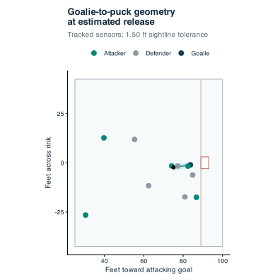

Estimating screen assists
We estimate screen assists from public NHL goal-replay tracking by measuring offensive players’ positions relative to the puck and defending goalie around the scoring shot. We consider the duration and timing of a possible obstruction, then compare the resulting credits with independent annotations from Clear Sight Analytics. Because the tracking does not reveal body orientation or the goalie’s view directly, we also examine how changes in positional and timing assumptions affect the estimates.
Definition and counting rules
Each qualifying offensive teammate receives one estimated screen assist per goal, excluding the credited scorer. Multiple teammates can qualify, including players who receive an official assist, while empty-net goals and shootouts are excluded. Both sustained obstructions and brief crossings can qualify when their geometry and timing resemble annotated screens.
The conservative definition uses a threshold selected with precision-weighted F0.5. The broader definition uses F1, with its threshold constrained to include every conservative credit. The two columns therefore offer alternative attribution rules with different measured precision and recall; they are not endpoints of a confidence interval.
Identifying the scoring shot
Public replays contain short sequences around goals, sampled at 10 Hz. We follow players by NHL identifier across changing tracking slots and rotate coordinates so the attacking goal is at x = 89 ft. Since the last frame need not coincide with the goal, we identify possible goal-plane crossings and trace the puck backward to estimate release. For ordinary shots, this uses movement toward goal, separation from the scorer, and agreement with the official shot location. For tips and deflections, we trace the incoming flight and check the scorer near the final touch. Rebound goals use the scoring attempt, so an earlier screen receives credit only if it also falls within that attempt’s analysis window.
These estimates are limited by the sampling interval and the absence of puck-touch annotations. Clips with unresolved timing, missing critical positions, or an unidentified goalie remain unevaluable, and we reject gaps longer than 0.21 s in the critical interval. We also shift estimated release by ±0.10 s to assess how timing affects the credits.
Sightline geometry
Let g, p, and s denote the tracked positions of the goalie, puck, and potential screener. The projection u locates the player along the goalie-to-puck segment, while d measures perpendicular separation. We evaluate obstruction only when the player lies between the endpoints and the segment is longer than 2 ft.
d = ‖(s − g) − u(p − g)‖ when 0 < u < 1
We summarize this geometry during the 0.50 s before release, a band from −0.20 to +0.10 s around release, and the puck’s flight toward the goalie. Post-release windows stop at arrival and exclude puck positions more than 1 ft beyond the goalie’s longitudinal position. The features describe obstruction duration, continuous duration, separation, goalie proximity, crossings, and the interval since the last obstruction before release. Our geometric baseline combines alignment with duration and this estimated reacquisition time.

Positional and timing uncertainty
The right-shoulder sensor placement means a tracked position is displaced from the player’s body center and, for a goalie, from the eyes. Public replays do not provide orientation, gaze, stance, or puck height, and skating direction cannot recover those measurements: players can move backward, sideways, or remain stationary. We consequently treat the sightline as a two-dimensional proxy for possible visual obstruction.
The primary geometry uses an effective tolerance of 1.50 ft, with 1.00 and 2.00 ft alternatives to examine sensitivity to body extent and sensor displacement. These scenarios change the obstruction features while keeping the fitted detector and thresholds fixed. They do not cover every possible posture or establish that the goalie loses sight of the puck. The replay examples below allow the band to be hidden and individual frames to be inspected near release.
Reference annotations and evaluation
We construct a private reference set from reviewed, quality-controlled Clear Sight Analytics records. Matches require agreement on the NHL game, scorer, teams, goalie, and period. An event-identifier match allows a clock difference of at most one second; otherwise, we require a unique exact clock-and-scorer match with the same contextual checks. Duplicate participant memberships are removed before attribution is evaluated.
Positive events require an explicit offensive, mixed, one-timer/screen, or screen/deflection classification and a named offensive teammate other than the scorer. Negative events require an explicit clear-sight or defensive-only classification with no offensive teammate recorded. We exclude screen-on-pass cases and screen-classified events lacking a named offensive teammate. Within events that have participants, the recorded list supplies the attribution reference, so its completeness remains an assumption; a named participant without usable tracking counts as an unrecovered positive.
We develop on 2023–24, select the detector and thresholds on 2024–25, and evaluate on the reserved 2025–26 season. The geometric baseline competes with ridge logistic regression using public tracking features, with model selection based on player-level average precision and the baseline preferred in a tie. Neither player identity nor CSA scoring probabilities enter the detector. We report goal detection and player attribution separately, since finding a screened goal does not ensure that the correct teammate receives credit. Classifier calibration applies to this selected reference population.
Counts and rate denominators
Screen assists per 60 min = 3,600 × credits / ice-time seconds
Numerators and denominators use the same season, competition, team, and October 19, 2026 cutoff. Traded players’ appearances, ice time, and credits follow the team represented in each game, and players with zero detected credits remain eligible. Count rankings have no exposure minimum. Rate rankings default to 25 games or 250 minutes for completed seasons and the combined all-seasons view, and five games or 60 minutes for the ongoing season. Playoff-only rankings start without a minimum. These values are adjustable, and rates always require positive exposure.
Official exposure includes games with missing or unevaluable replays, for which we infer no replacement credits. Missing tracking can therefore depress rates. Playing roles, teammates, and team shooting volume also affect opportunities, so exposure adjustment does not make the rankings a measure of causal player value.
Replay availability and evaluable goals
The study covers 2023–24 through 2025–26 and completed 2026–27 games dated through October 19, 2026. Stored replays cover 99.22% of official non-shootout goals in 2023–24 before tracking-quality exclusions. The table distinguishes usable shot intervals from empty-net goals and other unevaluable cases.
| Season | Official goals | Evaluated | Empty net | Unevaluable |
|---|
Reproducing the snapshot
The repository provides R analysis code, detector parameters, goal–player credits, official player-game exposure, short replay segments, and aggregate findings. These public outputs reproduce the ranking arithmetic, figures, and paper; input provenance records the package revision and data snapshot. Full tracking caches remain local, and CSA records and event-level reference labels are not distributed. Re-estimating the CSA-dependent models requires authorized database access.